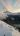

Road Trip NZ: Mt. Aspiring and Mt. Cook National Parks
10/29/2019
Prom in the mountains
I'm currently studying abroad at the University of Canterbury in Christchurch, New Zealand, and it is now finals season.
Time to grind, study all day, and dream about studying all night, right? Wrong!
Here at Canterbury, we have a full week off of classes for study time, and then a two week final exam period. However, my first final wasn't until the end
of the first finals week, effectively giving me a two week break. There was no way I was going to do nothing but study for two weeks straight, so
seven friends and I went on a week long road trip through the mountains.
{kind=link}
After lots of debating about where to go first for the best weather (it looked terrible everywhere), we ended up driving to Wanaka
first. We saw the town and of course #thatwanakatree, then we camped at Kidds Bush (don't get me started on the name) by the lake for the night.
It was a rainy night, but we woke up to a beautiful view of the mountains over the lake.
{kind=link}
{kind=link}
That day, we decided we would tramp up to Brewster Hut in Northern Mt. Aspring National Park to stay the night.
It was a steep but short hike, covering about 3000ft of elevation over 1.5 miles. It took us about 2 to 2.5 hours to hike up,
and we were rewarded with very cloudy snapshots of mountains. After the steep hike, we were all pretty tired, but we had lots
of time, so a few of us decided to go exploring up Mt. Armstrong behind the hut. We climbed up
another 1000ft, but we were surrounded by fog and couldn't see much, so we came back down after a little while.
{kind=link}
Just before sunset, something incredible happened. The clouds above us cleared up, and the valley below us was lit
with a beautiful golden light. And things got a little weird.
{kind=link}
{kind=link}
That night, we laid out and watched the stars for hours, and budding photographer Thomas fiddled around with
Kyle's camera and ended up getting an awesome picture of the Andromeda galaxy with a shooting star in the frame.
{kind=link}
The next day, we hiked down then spent the night exploring Wanaka('s bars). We stayed in a nice 8-bunk dorm in a
hostel. It was a fun night, and we woke up to a pretty nice morning, which was surprising because the forecast was rain for
the following 3 days. Given the nice weather, we decided to tramp to Liverpool Hut in Mt. Aspiring National Park. It's a 15km hike
down the West Matukituki Valley, and absolutely beautiful. The valley is incredibly picturesque, surrounded by towering mountains
with a myriad waterfalls pouring off their slopes. The hike in began nicely, but when we got to Aspiring Hut, about halfway, it began
to rain. It was just a light rain, though, so we soldiered on. But as we were climbing the final stretch to Liverpool Hut (and it
was actually climbing up roots and rocks at points), it began to snow. It didn't stop for the next two days. Thus began our 3 days
in a 1-room hut in the mountains.
{kind=link}
We didn't want to risk going down the steep, slippery track from the hut in the blizzard, so we waited it out. You'd
think having 8 people in a hut together for two days would wear on your nerves, but I really enjoyed it. It was like getting a snow
day as a kid. We played lots of card games, including some intense Egyptian Rat Slap and Hearts, we stacked the tsakis, and we did
Sour Patch Kids body shots.
{kind=link}
The third day, we woke up to a beautiful sunny morning and views of Mt. Aspiring, Liverpool, and Rob Roy. The hike
out was one of my all-time favorites.
{kind=link}
{kind=link}
After hiking out of Mt. Aspiring, I went to the library because I had a deadline for a coding interview.
Unfortunately, you had to pay to use the wifi and computers at the library, which I was not about, so I tried to do
it on my phone. It did not work well. Eventually I think I got something to upload after connecting to a grocery store wifi,
but I'm not too hopeful about that application.
After visiting Brewster and Liverpool huts, we had done basically everything we wanted to do in Wanaka, so we drove
to the White Horse campground in Mt. Cook National Park for the night. It was windy and rainy, and Kyle and I were in a $10 tent
I found at a thrift shop. This tent had held up to rain before, but apparently it was done. The fly soaked through, then my sleeping
bag soaked through, then my puffy, and finally all my clothes were wet and I was sleeping in a puddle. I don't think Kyle fared much
better.
It wasn't the most comfortable night, but the day made up for it, because we climbed up to Mueller Hut. I'd been wanting to
do this for awhile, because it's pretty much the most famous hut in New Zealand. Set on top of a mountain just into the Park, with incredible
views of the Sefton Range and Mt. Cook, no other hut is so accessible with such a crazy view. However, it is more dangerous, because getting to
it involves snow travel and crossing avalanche paths. The earlier forecasts said it would snow, but we ended up getting good weather with a low
avalanche danger, so half of us decided to go up to Mueller and the other half went to Ball Shelter, which is a tiny hut right by the Ball Glacier.
The climb to Mueller Hut was awesome. We had the hut to ourselves, the weather was great, and the views were breathtaking.
{kind=link}
{kind=link}
{kind=link}

{kind=link}
Mt. Cook at sunrise
None of us really wanted to leave Mueller, and Thomas really really didn't want to leave, but
eventually we glissaded down and left the mountain. We met up with the other people who went to Ball Shelter,
and half the group decided they wanted to go back to Christchurch that night, while the rest of us just
wanted one more day. So we split up, with our car driving to Mt. Sunday for one more night of camping. Mt. Sunday
was the film site of Edoras in the kingdom of Rohan in Lord of the Rings, but it's really just a small hill. Definitely
not a mountain. Not sure why we went there, but it meant we got two summits in one day: Mt. Oliver by Mueller Hut
and Mt. Sunday. Up next: seven summits record. The next day, we just took our time driving back to Christchurch.
Overall, it was an awesome trip into the mountains with a good group of guys.